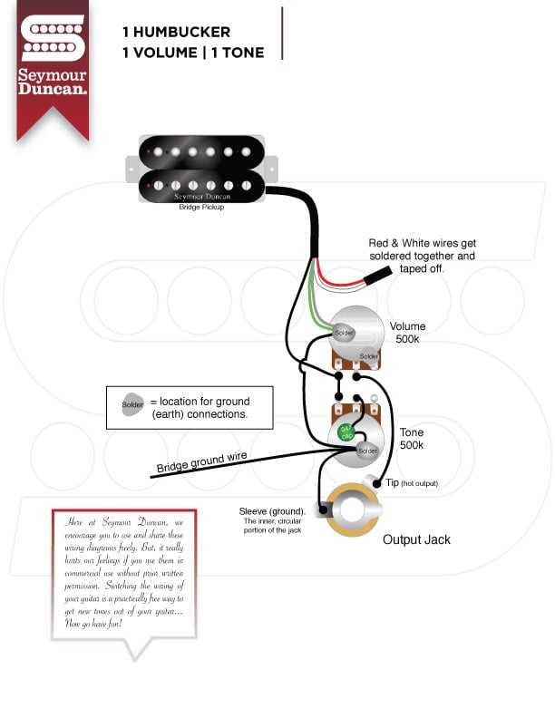

拾音器与吉他电路探索（一）：吉他端等效电路
本系列的探索动机来源于对PRS S2中一处特殊的电路设计产生的疑问。为了理解该设计的用意，需要对电路的频响特性进行把握。因此，本文的主要任务是得到从电吉他到负载前的等效电路。基于该等效电路，我们还使用了之前文章实现的AC Analysis工具对比单线圈和双线圈拾音器在频响方面的不同偏好。
对于开头的疑问，将在系列的第二篇文章进行详细探索。
对PRS S2一处电路设计的疑问
我们知道，一个常见的单Volume旋钮和单Tone旋钮的吉他电路，有如下形式（图片来自于Seymour Duncan官网的wiring diagrams）：

我们省略拾音器后，可简化为如下电路：
可以看到，Volume电位器\(R_V\)一路就是分压之用，Tone电位器\(R_T\)一路还有一串联电容来形成滤波特性。
然而，笔者观察了手中的两把吉他的电路仓，其中PRS S2有一个非常规的设计，它在Volume电位器的左脚和中脚连接了一个电容。
也就是说，有如下电路形式：
为了了解这个设计的功效，就需要探索吉他这一侧的电路特性。下面我们尝试构建吉他端的等效电路。
等效电路的构建
对于吉他端的等效电路，我们主要考虑以下几个组件：
- 拾音器
- 吉他电路仓
- 吉他连接线
- 吉他连接的负载
下面我们一一进行阐述。
拾音器
我们知道，常见的拾音器由磁铁、磁柱和缠绕的线圈等元件组成，其中缠绕的线圈形成电感，而磁铁用于磁化磁柱，磁柱进一步去磁化琴弦。
当受磁化的琴弦发生运动时，线圈会因磁场的变化而产生变化的电信号。总之，理想拾音器可被看作为电感。
而在实际情况中，由于拾音器中的线圈本身具备阻值，并且线圈的缠绕会产生额外的电容作用。因此实际的拾音器可被等效为一个由电感、串联的电阻以及并联的电容组成的电路，而运动的琴弦可被等效为电压源。于是，我们可以得到单线圈拾音器的等效电路：
对于各个等效组件的参数，我们参考对Seymour Duncan SSL-1拾音器的测量结果1。作者antigua对于拾音器的参数测量有很多的经验，对于拾音器的特性和测量都有专门的文章2,3。
这里，我们取琴颈拾音器的等效参数，如下：
- 电感L：2.637H
- 电容C: 103pF
- 电阻R：6.61kΩ
吉他电路仓
为了方便表述，我们依旧使用单Volume旋钮和单Tone旋钮场景的电路，相关电路已在本文开头给出，我们将其与拾音器等效电路进行连接。
由于本文主要探索常规的单Volume旋钮和单Tone旋钮场景，我们暂时忽略本文开头提到的与Volume旋钮并联的电容的场景。
对于电位器阻值，单线圈一般配合250kΩ的电位器。
对于Tone旋钮串联的电容容值，Seymour Duncan官网有相关文章对电容值的选择进行了建议4。其中，0.022µF为常见配置。这里也选用该值。
吉他连接线和连接的负载
我们知道，吉他连接线的许多属性会影响对音色的传递，比如材质、工艺以及长度等。一般而言，吉他连接线带来的影响可被等效为电容。关于电容值，其范围通常在52pF/meter ~ 190pF/meter5。
我们这里取中间值120pF/meter，吉他线长度我们选用常见的3m。因此我们这里，吉他连接线对应的电容容值为360pF
至于连接的负载，一般具有高阻抗的特点，这里我们直接将负载视为高阻值的电阻。我们参考常见的效果器的输入阻抗，有500kΩ（Ibanez TS-808）、1MΩ（Boss SD-1）等。这里我们使用1MΩ。
最终，我们可以得到完整的等效电路，如下：

等效电路的AC Analysis
上面我们得到了一个单线圈拾音器到负载前的等效电路，接下来我们可以运用之前文章实现的AC Analysis工具对单线圈形式电路进行频响的观察。
不过，既然得到了单线圈形式的电路，不妨再构造双线圈形式的电路，最后一并观察。
双线圈拾音器电路如何等效？
双线圈拾音器可理解为由两个单线圈拾音器组成，其原理为在两个单线圈拾音器之间插入一个磁铁，使得两个单线圈拾音器的磁性反向。然后，这两个单线圈拾音器再反向串联，由此使得双线圈拾音器中的俩拾音器信号同相，而环境噪声带来的噪声信号反相。这也是为什么双线圈拾音器的噪音较小的原因。
我们这里将环境噪声忽略，因此双线圈拾音器可简单等效为两个单线圈拾音器的串联。下面我们直接画出到负载端的完整电路：
单线圈和双线圈的频响对比
接下来，我们将上述得到的单线圈拾音器和双线圈拾音器进行对比。
为了保证两个电路的其他变量一致，我们将Volume旋钮和Tone旋钮都打满，即Volume和Tone都为10。于是，该部分电路为如下形式：
最后，我们分别将两个等效电路表示到之前实现的AC Analysis工具little_ac_analysis：
single_coil_ckt = Circuit(
components = [
# pickup part
VoltageSource(V=1, nodes=[0, 1]),
Inductor(L=2.637, nodes=[1, 2]),
Resistor(R=6.61e3, nodes=[2, 3]),
Capacitor(C=103e-12, nodes=[3, 0]),
# volume part
Potentiometer(R=250e3, knob_pos=10.0, nodes=[3, 5, 0], label='Volume Knob'),
# tone part
Potentiometer(R=250e3, knob_pos=10.0, nodes=[3, 3, 4], label='Tone Knob'),
Capacitor(C=22e-9, nodes=[4, 0]),
# cable
Capacitor(C=360e-12, nodes=[5, 0]),
# load
Resistor(R=1e6, nodes=[5, 0]),
],
output_node = 5,
name = "single coil guitar")
humbucker_ckt = Circuit(
components = [
# pickup part
VoltageSource(V=1, nodes=[8, 1]),
Inductor(L=2.637, nodes=[1, 2]),
Resistor(R=6.61e3, nodes=[2, 3]),
Capacitor(C=103e-12, nodes=[3, 8]),
VoltageSource(V=1, nodes=[0, 6]),
Inductor(L=2.637, nodes=[6, 7]),
Resistor(R=6.61e3, nodes=[7, 8]),
Capacitor(C=103e-12, nodes=[8, 0]),
# volume part
Potentiometer(R=250e3, knob_pos=10.0, nodes=[3, 5, 0], label='Volume Knob'),
# tone part
Potentiometer(R=250e3, knob_pos=10.0, nodes=[3, 3, 4], label='Tone Knob'),
Capacitor(C=22e-9, nodes=[4, 0]),
# cable
Capacitor(C=360e-12, nodes=[5, 0]),
# load
Resistor(R=1e6, nodes=[5, 0]),
],
output_node = 5,
name = "humbucker guitar")我们依次跑出单线圈和双线圈电路的频响数据，以下为使用Plotly库画出的频响对比图：
可以看到，两者首先在功率上有所区别，双线圈整体上大于单线圈。
此外，我们可以看到两种拾音器的频响并不平直，在高频部分都有一定的隆起，单线圈尤为明显。隆起部分被称为resonant peak，其所在频率被称为resonant frequency。resonant peak的高度和resonant frequency的大小在很大程度上决定了拾音器的听感6。
从图中我们可以看到，虽然双线圈拾音器的整体幅值大于单线圈拾音器，但是其resonant peak不像单线圈拾音器的那么显眼，并且双线圈拾音器的resonant frequency明显小于单线圈的resonant frequency。这应该能为解释为何双线圈拾音器的音色更暖，而单线圈拾音器的音色更亮提供了一个角度。
更多的探索
我们在本文阐述了如何得到从拾音器到负载端的等效电路。并对单线圈拾音器和双线圈拾音器的频响进行了对比。
下一篇文章，我们将探索Volume旋钮和Tone旋钮的设置对音色的影响，并且尝试回答本文开头的那个疑问。
https://guitarnuts2.proboards.com/thread/7745/seymour-duncan-ssl-analysis-review↩︎
https://guitarnuts2.proboards.com/thread/8072/measuring-pickups-lcr-meters↩︎
https://guitarnuts2.proboards.com/thread/7723/measuring-electrical-properties-guitar-pickups↩︎
https://www.seymourduncan.com/blog/latest-updates/what-tone-capacitors-do-i-need-for-my-guitar↩︎
http://www.shootoutguitarcables.com/guitar-cables-explained/capacitance-chart.html↩︎